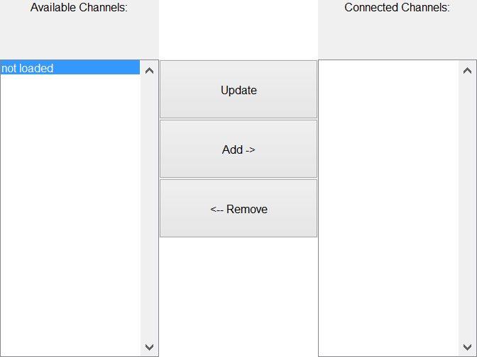

Contents
classdef std_selector_ui < handle
% STD_SELECTOR_UI Holds the gui elements for the source settings selection panel % % STD_SELECTOR_UI() create ui in new figure % STD_SELECTOR_UI(PARENT) create ui in parent panel % STD_SELECTOR_UI(PARENT, MAINOBJ) create ui with handle to main object % % Example 1: % obj = std_selector_ui % % Example 2: % Parent = figure % obj = std_selector_ui(Parent) % % STD_SELECTOR_UI Methods: % pbUpdate_Callback - PushButton Update channel names Callback % pbAdd_Callback - PushButton Add Callback % pbRemove_Callback - PushButton Remove Callback % % STD_SELECTOR_UI Properties: % Parent - Handle of panel to place ui in % MainObj - Handle of main object % Name - Name of UI % ChanNames - Channel names % UI - Cell UIs for the options % Tag - Tag to find object % % Written for the BSc graduation project Acoustic Enhancement via % Beamforming Using Smartphones. % % Team: S. Bosma R. Brinkman % T. de Rooij R. Smeding % N. van Wijngaarden E. Wouters % % Supervisor: Jorge Martínez Castañeda % % Contact: E.H.Wouters@student.tudelft.nl % % See also BF_DATA, MAIN_WINDOW
Properties
properties
Parent % Handle of panel to place ui in
MainObj % Handle of main object
Name = 'Standard Selector'; % Name of UI
ChanNames = {}; % Channel names
UI % Cell UIs for the options
Tag = 'std_selector_ui'; % Tag to find object
end
% Methods
methods
UI Constuctor
function obj = std_selector_ui(parent, mainObj, name)
Parse Input
figure Handle
if nargin == 0 obj.Parent = figure('Name',obj.Name,'NumberTitle','off','resize','on'); elseif nargin >= 1 if ishandle(parent) obj.Parent = parent; else warning(['First argument needs to be a handle,'... 'new figure created.']); obj.Parent = figure('Name',obj.Name,'NumberTitle','off','resize','on'); end end if nargin >= 2 obj.MainObj = mainObj; else obj.MainObj.DataBuffer = bf_data; end if nargin >= 3 obj.Name = name; end % Graphics Code obj.UI = obj.graphicsCode(); % Debug % assignin('base','obj',obj)
BF_DATA Beamformer Audio Buffer. Has many functions to label the
channels and add data from different sources. The time indices of the
data in the buffer can be kept in sync using different methods.
BF_DATA(OBJ) create empty file object
BF_DATA(OBJ, MAINOBJ) create file object and add handle to main object
BF_DATA(OBJ, MAINOBJ, SOURCEID) create empty file object and set SourceID
BF_DATA(OBJ, MAINOBJ, SOURCEID, FILENAME) add file named fileName to object
BF_DATA(OBJ, MAINOBJ, SOURCEID, FILENAME, LOCATIONS) add file with locations
BF_DATA(OBJ, MAINOBJ, SOURCEID, FILENAME, LOCATIONS, CHANNAMES) add file with
locations and channel names
Example 1:
obj = bf_data
obj.setChanNames({'S1','S2','S3','S4'})
obj.setTotalSamples(100)
obj.addSamples([1;2;3;4;[5:100]'],'S3')
obj.getAudioData({'S3','S1'})
Example 2:
obj = bf_data
obj.setChanNames({'S1','S2','S3','S4'})
obj.addSamples([1;2;3;4;[5:100]'],'S1',1,25)
Example 3:
obj = bf_data
obj.setChanNames({'S1','S2','S3','S4'})
obj.setDelays(5,{'S2'})
obj.addSamples([1;2;3;4;[5:100]'],'S3',1)
BF_DATA Methods:
load - Load data from audio or matlab file.
save - Save data to audio or matlab file.
play - Play the data using an audio device.
setNChan - Set number of channels.
setTotalSamples - Set total number of samples.
setLocations - Set Channel Locations.
setChanNames - Set Channel Names.
setDelays - Set Delay Times.
addSamples - Add samples to the data.
getAudioData - Get samples out of buffer (time axes of channels agree).
resampleData - Resample data using matlab resample function
delayData - Delay data so when data is loaded the time axes agree.
names2inds - Get index of channel(s) in audiodata matrix
BF_DATA Properties:
FileName - Name of the audio file to save including extention
FilePath - Path of the audio file to save
SourceID - Identifier for source device or file in use.
Fs - Sampling Frequency in Hz
BitsPerSample - Number of Bits per audio Sample
NChan - Number of audio channels in File
Comment - Comment of audio file
Locations - Channel locations [x y z az el up]
ChanNames - Channel names
DelaySamples - Delays in samples for each channel
CurrentSample - Current sample for each channel. Used when adding
samples to the channel.
TotalSamples - Total length of the audio data in samples
IsInitialized - Has the source been correctly initialized
AudioData - Audio Data matrix size = [TotalSamples NChan]
Tag - Tag to find object
Written for the BSc graduation project Acoustic Enhancement via
Beamforming Using Smartphones.
Team: S. Bosma R. Brinkman
T. de Rooij R. Smeding
N. van Wijngaarden E. Wouters
Supervisor: Jorge Martínez Castañeda
Contact: E.H.Wouters@student.tudelft.nl
See also BF_DATA/LOAD, BF_DATA/SAVE, BF_DATA/PLAY, BF_DATA/ADDSAMPLES,
BF_DATA/SETNCHAN, BF_DATA/SETTOTALSAMPLES, BF_DATA/SETLOCATIONS,
BF_DATA/SETCHANNAMES, BF_DATA/SETDELAYS, BF_DATA/ADDSAMPLES,
BF_DATA/GETAUDIODATA, BF_DATA/RESAMPLEDATA, BF_DATA/DELAYDATA,
BF_DATA/NAMES2INDS, MITM, SITM, AUDIOREAD, AUDIOWRITE, SAVE, LOAD
Published output in the Help browser
showdemo bf_data
end
 PushButton Update Channel Names Callback
function pbUpdate_Callback(obj,~,~) obj.UI.ListAvailable.String = obj.MainObj.DataBuffer.ChanNames; obj.UI.ListConnected.String = obj.ChanNames; if ~isempty(obj.UI.ListAvailable.String) obj.UI.PbAdd.Enable = 'on'; else obj.UI.PbAdd.Enable = 'off'; end if ~isempty(obj.UI.ListConnected.String) obj.UI.PbRemove.Enable = 'on'; else obj.UI.PbRemove.Enable = 'off'; end end
ans =
std_selector_ui with properties:
Parent: [1x1 Figure]
MainObj: [1x1 struct]
Name: 'Standard Selector'
ChanNames: {}
UI: [1x1 struct]
Tag: 'std_selector_ui'
PushButton Add Callback
function pbAdd_Callback(obj,~,~) if ~isempty(obj.UI.ListAvailable.String) && ~isempty(obj.MainObj.DataBuffer.ChanNames) % Start Mitm Streaming if any(strcmp(obj.UI.ListAvailable.String{obj.UI.ListAvailable.Value},obj.UI.ListConnected.String)) return; end obj.ChanNames{end+1} = obj.UI.ListAvailable.String{obj.UI.ListAvailable.Value}; fprintf('Added %s to %s\n',obj.UI.ListAvailable.String{obj.UI.ListAvailable.Value},obj.Name); % Increment selection if obj.UI.ListAvailable.Value < length(obj.UI.ListAvailable.String) obj.UI.ListAvailable.Value = obj.UI.ListAvailable.Value + 1; else obj.UI.ListAvailable.Value = 1; end else warning('Cannot add channel, no channels found.') end obj.pbUpdate_Callback(); end
PushButton Remove Callback
function pbRemove_Callback(obj,~,~) if ~isempty(obj.UI.ListConnected.String) && ~isempty(obj.ChanNames) % Start Mitm Streaming fprintf('Removed %s from %s\n',obj.UI.ListConnected.String{obj.UI.ListConnected.Value},obj.Name); obj.ChanNames(obj.UI.ListConnected.Value) = []; % Decrement selection if obj.UI.ListConnected.Value > 1 obj.UI.ListConnected.Value = obj.UI.ListConnected.Value - 1; end else warning('Cannot remove channel, no channels connected.') end obj.pbUpdate_Callback(); end
Load File Graphics Code
function UI = graphicsCode(obj) % GRAPHICSCODE Graphics Code % Standard Selector UI panel n=6;m=3; UI.TextAvailable = uicontrol(obj.Parent,'Style','text',... 'String','Available Channels:','Units','Normalized',... 'Position',grid2pos([1,1, 1,1, m,n])); UI.TextConnected = uicontrol(obj.Parent,'Style','text',... 'String','Connected Channels:','Units','Normalized',... 'Position',grid2pos([3,1, 1,1, m,n])); UI.ListAvailable = uicontrol(obj.Parent,'Style','listbox',... 'String',{'not loaded'},'Units','Normalized',... 'Position',grid2pos([1,2, 1,n-1, m,n])); UI.ListConnected = uicontrol(obj.Parent,'Style','listbox',... 'String',{},'Units','Normalized',... 'Position',grid2pos([3,2, 1,n-1, m,n])); UI.PbUpdate = uicontrol(obj.Parent,'Style','pushbutton',... 'String','Update','Units','Normalized',... 'Position',grid2pos([2,2, 1,1, m,n]),'Callback',@obj.pbUpdate_Callback); UI.PbAdd = uicontrol(obj.Parent,'Style','pushbutton',... 'String','Add ->','Units','Normalized',... 'Position',grid2pos([2,3, 1,1, m,n]),'Callback',@obj.pbAdd_Callback); UI.PbRemove = uicontrol(obj.Parent,'Style','pushbutton',... 'String','<-- Remove','Units','Normalized',... 'Position',grid2pos([2,4, 1,1, m,n]),'Callback',@obj.pbRemove_Callback); obj.pbUpdate_Callback(); end
end
end